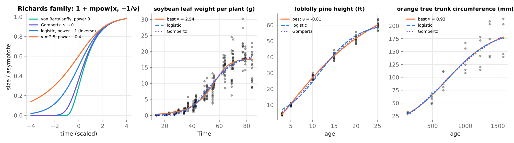

Biology series · 5 of 11
The Richards family of growth curves, which holds the logistic, Gompertz and von Bertalanffy curves as special cases, is exactly size/asymptote = 1 + mpow(x, p), where the excess x fades exponentially and p = −1/ν. Logistic growth is p = −1, the circle-operation inverse, the same saturation as an enzyme's Michaelis–Menten curve. Gompertz growth in discrete time iterates a single circle-operation power. Three real growth data sets put the exponent in three different places.

Known or new. All of this is known. The Richards curve (1959) unifies the logistic, Gompertz and von Bertalanffy growth laws through one shape parameter ν, and allometry is Huxley's power law. Writing the family as 1 + mpow(x, −1/ν) is a relabelling of Richards' own formula. What the page adds is the link to the rest of the series: the logistic case is the same circle-operation inverse that gives enzyme saturation, and the Gompertz case is an iterated circle-operation power.
Is there a lead worth following? None. The placement is exact but it is a relabelling: the shape parameter ν already plays the role of the exponent, and the data show no preferred value. It is noted here as glue for the series, not followed.
The Richards growth curve is y = K·(1 + Q·e−rt)−1/ν. Put x = Q·e−rt, an excess that fades exponentially. Then
a single circle-operation power. The named growth laws are settings of the power:
In discrete time Gompertz growth is yt+1/K = (yt/K)λ, so each step is the circle-operation power x ↦ (1 + x)λ − 1. Powers compose by multiplying exponents, so n steps are one power λⁿ. Lean proves both facts for whole-number exponents.
Allometry, Huxley's y ∝ xa, says the growth of y is the circle-operation power of the growth of x. Kleiber's ¾ law on the metabolism page is the same statement.
I fitted the Richards curve to three classic growth data sets, pooling all individuals in each, and tested the three named shapes against the free fit:
So the exponent varies from data set to data set, as growth biologists already know, and nothing singles out a special value. Pooling different plots, years and trees mixes individuals with different curves, so these ν values describe the average curve, not each organism.
I also considered phyllotaxis and morphogen gradients and did not find a place where the circle operation (called mult-add before 1.0) applies: phyllotaxis is about continued fractions and the golden angle, and gradients from two sources simply add. I ran no computation on either.
| Place | What the circle operation does there | Known since | Verdict |
|---|---|---|---|
| Richards growth family | y/K = 1 + mpow(x, −1/ν), x fading exponentially | Richards 1959 | Exact relabelling |
| Logistic growth | Power −1: the circle-operation inverse, as in enzyme saturation | Verhulst 1838 | Exact, known |
| Gompertz growth | Iterated circle-operation power; steps compose to λⁿ | Gompertz 1825 | Exact, known |
| Allometry | Growth of y = mpow(growth of x, a) | Huxley 1932 | Relabelling only |
| Real growth data | ν = 2.54, −0.81, 0.93: no shared exponent | Standard data sets | No lead |
File biology/05-development/lean/Development.lean, core Lean 4.37 with no mathlib, built on the shared library's base and using ∘₁ for the circle operation. Every theorem uses only Lean's standard axioms. It goes into the shared proof library as FusedAlgebra/Topics/Biology/Development.lean.
allometry, bertalanffy, gompertz_steps, logistic, logistic_shortfall, mpow_mpow, pow_mul', star_def
Numeric checks: 12 of 12 pass, from checks.py beside this page.
Fits are ordinary least squares on pooled data with three free parameters plus ν; p-values compare a fixed-ν fit against the free one with an F test. A mixed-effects fit per individual would be the careful version.